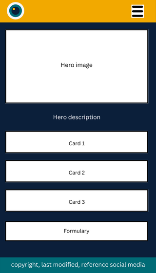
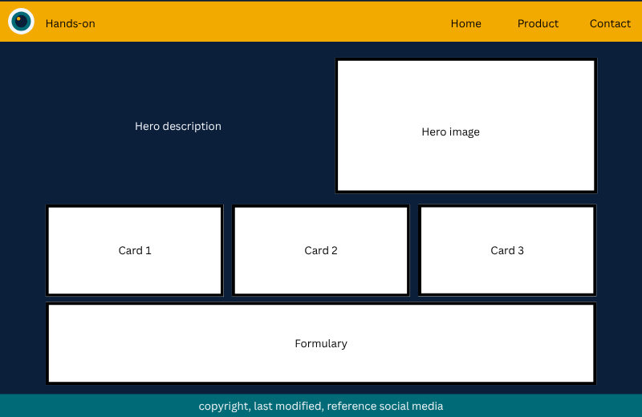

Poppins SemiBold
Used for the site name, page titles, and section headings.
Rather than theory!
This is the site plan for my WDD 131 final project: a website about Apple iOS devices, told from real daily use by me.
Hands-On!
The name means that the site talks about Apple iOS devices from real use, not from specification sheets. I own these devices and use them every day, so I can show the quality of the products and how the iOS system really works, with my own photos. The lens in the logo represents those photos, and that is why the tagline is "Rather than theory!"
Planned pages: Home, Products, Contact, and a References page.
These colors are used on this document and will be used on the final site.
Used for the site name, page titles, and section headings.
Used for paragraphs, navigation links, form labels, and buttons.
Home page layout for a phone and for a larger screen.

